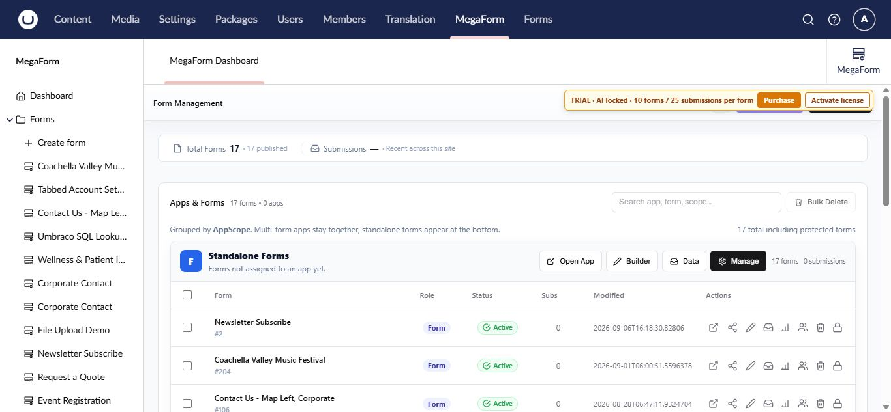

MegaForm for Umbraco
MegaForm adds a visual form workspace to Umbraco 17. Use it to create forms, publish them, review entries, automate follow-up actions, and manage access without leaving the Umbraco backoffice.

What you can do
- Build single-page or multi-step forms with drag-and-drop fields, layouts, and widgets.
- Configure validation, conditional logic, field security, themes, and form settings.
- Publish a form at its own public URL or select it on an Umbraco content page.
- Search, filter, and review submitted entries.
- Run simple submission actions or advanced BPMN workflows.
- Reuse option lists and named database sources across forms.
- Translate the MegaForm interface and form labels.
- Ask AI Designer to prepare a form plan that you can review before applying.
- Create a complete new form from a plain-language AI prompt.
- Inspect workflow attempts and retry a failed step from the submission history.
- Optionally run reviewed server-side C# after a saved submission when the scripting add-on is installed.
The MegaForm section
Sign in to the Umbraco backoffice and select MegaForm from the top navigation. The left navigation contains:
| Area | Purpose |
|---|---|
| Dashboard | Form totals, recent forms, quick actions, and package status |
| Forms | Create a form or open an existing form |
| Submissions | Browse entries across forms |
| Prevalue Sources | Maintain option lists shared by multiple fields |
| Data Sources | Register server-side database connections for form data |
| Security | Control what each Umbraco user group may do in MegaForm |
| Languages | Select the display language and manage translations |
| Settings | Database, payment, email, upload, CAPTCHA, AI, storage, and license settings |
Tip
Start with Install and activate MegaForm on a new site. If MegaForm is already installed, go directly to Create a form.
Typical publishing flow
- Create a form from a template, imported JSON, quick start, or a blank form.
- Add and configure fields in the visual builder.
- Review form settings and any submission workflow.
- Save a draft, preview it, then publish.
- Open the public form or select it on an Umbraco content page.
- Review new entries in Entries or Submissions.